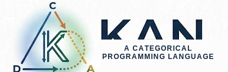

Programs are diagrams. Computation is extension. The compiler fills the horn.
A Kan program is a partial diagram awaiting universal completion.
Today, concretely: a dependently typed language that type-checks and compiles to native code. Files are .kan.
Most languages ask you to describe every step. Kan begins from what you actually know — some objects, some maps, some constraints — and treats the gaps as opportunities for universal construction.
Every paradigm has one computational act. The lambda calculus has application; logic programming has inference. Kan’s is extension: given a partial diagram, find the canonical object or morphism that completes it. Named for Daniel Kan — whose Kan extension and Kan complex both say the same thing: a partial diagram has a canonical filler.
Because that single primitive is the universal completion of a partial diagram, the deep constructions of category theory stop being separate theories and become one act at different shapes: a limit or colimit is a fill, a sheaf is the fill that glues compatible local sections into a unique global one, and a fibration is the fill that lifts a partial diagram along a map.
One sort, one relation, one operation. Cells (objects, morphisms, … as dimensions of one thing), their faces (which let a diagram be partial), and fill — complete a horn. Everything else is derived, and the modality dial decides how strong a completion to demand.
Some filler must exist. This builds the categorical substrate — composition, identities.
The best filler, unique up to isomorphism — a Kan extension. This does the real work: products, limits, colimits, folds.
Kan is dependently typed: you write a program, state its property as a type, and the checker
proves it. Here, addition — and a proof by induction that add n 0 = n for
every n. The proof is simply that it type-checks:
-- nat.kan def add : Nat -> Nat -> Nat = \m n. natElim (\_. Nat) n (\k ih. suc ih) m -- for ALL n, add n zero = n — proved by induction def add_n_zero : (n : Nat) -> Id Nat (add n zero) n = \n. natElim (\m. Id Nat (add m zero) m) refl (\k ih. ap Nat Nat (\x. suc x) (add k zero) k ih) n
$ kan build nat.kan -o nat && ./nat
5
7
If it type-checks, the theorem holds — then it compiles to a native binary.
dependently typed · compiles to native Kan is an early research language — real and running, with the categorical layer growing on top.
List A) and induction — real proofsVec, Fin), a C backend, fill as a typed operation# requires OCaml + dune git clone https://github.com/jackmitchelwidman/kan cd kan && dune build kan check examples/nat.kan # type-check kan run examples/nat.kan # run kan build examples/nat.kan -o nat && ./nat # compile to native
Every file in examples/ is a .kan program.
Design doc: README ·
the type system and unification story are in
/docs.